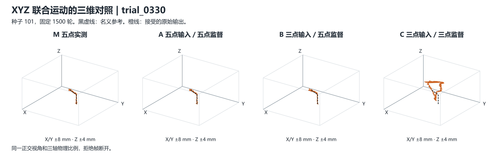

四类动作的同序列回测
固定 1500 轮 · 种子 101 · 同一五点冻结 CSML
橙线为原规则接受的输出，黑线或空心点为名义参考。原定位掩码外及拒绝帧断线。表中均误为原始／整序列常量消偏，P95 为原始值。M 为五点实测，B 为三点输入／五点监督。
| 动作 | 合格定位目标 | M 均误（mm） | B 均误（mm） | M P95（mm） | B P95（mm） | B 覆盖率（%） |
|---|
| 点阵触压 | 2213 | 0.432 / 0.373 | 0.614 / 0.572 | 1.038 | 1.873 | 93.0 |
| 多向直线 | 4421 | 0.193 / 0.185 | 0.283 / 0.252 | 0.369 | 0.593 | 99.5 |
| 圆形扫描 | 2591 | 0.195 / 0.191 | 0.251 / 0.249 | 0.425 | 0.513 | 99.7 |
| XYZ 联合运动 | 474 | 0.167 / 0.125 | 0.265 / 0.214 | 0.315 | 0.458 | 99.8 |
XYZ 联合运动 · 三维视图
